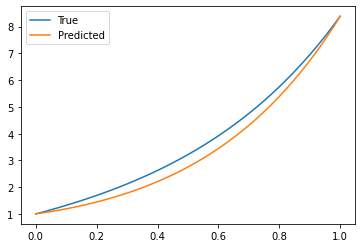

import torch
import torch.nn as nn
import torch.nn.functional as F
import matplotlib.pyplot as plt
%matplotlib inlineIntroduction
PINNs are a class of neural networks for solving partial differential equations. They are trained to minimize the residual of the differential equation, and the boundary and initial conditions. This is done by defining a loss function that is the sum of the mean squared error of the differential equation and the boundary and initial conditions. The loss function is minimized using gradient descent.
Reference: https://www.youtube.com/watch?v=LQ33-GeD-4Y
Let us assume our true function is:
\[u(x) = e^{ax} + x\]
We have:
\[\frac{du}{dx} = ae^{ax} + 1\]
\[\frac{d^2u}{dx^2} = a^2e^{ax}\]
We can create a differential equation from this:
\[\frac{d^2u}{dx^2} - a\frac{du}{dx} = a\]
We can also create a boundary condition from this:
\[u(0) = 1\] \[u(1) = e^a + 1\]
x_lin = torch.linspace(0, 1, 100)
a = 2
u_true = torch.e**(a*x_lin) + x_linplt.plot(x_lin, u_true)
class MLP(nn.Module):
def __init__(self, n_input=1, n_hidden=5, n_output=1):
super(MLP, self).__init__()
self.fc1 = nn.Linear(n_input, n_hidden)
self.fc2 = nn.Linear(n_hidden, n_hidden)
self.fc3 = nn.Linear(n_hidden, n_output)
def forward(self, x):
x = torch.sin(self.fc1(x))
x = torch.sin(self.fc2(x))
x = self.fc3(x)
return xdevice = torch.device("cuda" if torch.cuda.is_available() else "cpu")u_model = MLP(n_hidden=20).to(device)
u_modelMLP(
(fc1): Linear(in_features=1, out_features=20, bias=True)
(fc2): Linear(in_features=20, out_features=20, bias=True)
(fc3): Linear(in_features=20, out_features=1, bias=True)
)# Let us compute du/dx for any x vector
x_vec = torch.randn(10, 1, requires_grad=True).to(device)
u_vec = u_model(x_vec)
print(u_vec)tensor([[0.1620],
[0.1934],
[0.0714],
[0.0571],
[0.1903],
[0.1520],
[0.1660],
[0.0063],
[0.0372],
[0.0696]], device='cuda:0', grad_fn=<AddmmBackward0>)du_dx = torch.autograd.grad(u_vec, # Whose gradient we want
x_vec, # WRT what we want the gradient
torch.ones_like(u_vec), # Shape of the gradient
create_graph=True)[0] # We want to differentiate againdu_dxtensor([[-0.0515],
[-0.0306],
[-0.1101],
[-0.1171],
[-0.0325],
[-0.0587],
[-0.0487],
[-0.1360],
[-0.1257],
[-0.1111]], device='cuda:0', grad_fn=<MmBackward0>)# Now, let us compute d2u/dx2 for any x vector
x_vec = torch.randn(10, 1, requires_grad=True).to(device)
u_vec = u_model(x_vec)
du_dx = torch.autograd.grad(u_vec, # Whose gradient we want
x_vec, # WRT what we want the gradient
torch.ones_like(u_vec), # Shape of the gradient
create_graph=True)[0] # We want to differentiate again
d2u_dx2 = torch.autograd.grad(du_dx, # Whose gradient we want
x_vec, # WRT what we want the gradient
torch.ones_like(du_dx), # Shape of the gradient
create_graph=True)[0] # We want to differentiate againd2u_dx2tensor([[-0.0410],
[-0.0573],
[-0.0434],
[-0.0512],
[ 0.0402],
[-0.0564],
[ 0.0408],
[-0.0561],
[-0.0580],
[-0.0543]], device='cuda:0', grad_fn=<MmBackward0>)# PDE loss
def pde_loss(model, x):
u = model(x)
du_dx = torch.autograd.grad(u, # Whose gradient we want
x, # WRT what we want the gradient
torch.ones_like(u), # Shape of the gradient
create_graph=True)[0] # We want to differentiate again
d2u_dx2 = torch.autograd.grad(du_dx, # Whose gradient we want
x, # WRT what we want the gradient
torch.ones_like(du_dx), # Shape of the gradient
create_graph=True)[0] # We want to differentiate again
# Our PDE is d2u/dx2 -a*du/dx = a
# Loss = (d2u/dx2 -a*du/dx - a)**2
loss = (d2u_dx2 - a*du_dx - a)**2
return loss.mean()
# Boundary loss
def boundary_loss(model):
# Boundary condition u(0) = 1
x = torch.tensor([[0.0]]).to(device)
u = model(x)
loss = (u - 1)**2
# Boundary condition u(1) = e^a + 1
x = torch.tensor([[1.0]]).to(device)
u = model(x)
loss += (u - torch.e**(a) - 1)**2
return loss.mean()# Training loop
u_model = MLP(n_hidden=30).to(device)
optimizer = torch.optim.Adam(u_model.parameters(), lr=0.001)
for epoch in range(5000):
optimizer.zero_grad()
x_vec = torch.rand((400, 1), requires_grad=True).to(device)
loss = pde_loss(u_model, x_vec) + boundary_loss(u_model)
loss.backward()
optimizer.step()
if epoch % 50 == 0:
print("Epoch: {}, Loss: {:.4f}".format(epoch, loss.item()))
Epoch: 0, Loss: 76.9179
Epoch: 50, Loss: 44.1352
Epoch: 100, Loss: 32.6026
Epoch: 150, Loss: 29.2667
Epoch: 200, Loss: 26.7229
Epoch: 250, Loss: 25.0849
Epoch: 300, Loss: 21.3763
Epoch: 350, Loss: 15.6775
Epoch: 400, Loss: 9.4585
Epoch: 450, Loss: 5.4534
Epoch: 500, Loss: 2.9488
Epoch: 550, Loss: 1.8614
Epoch: 600, Loss: 1.1479
Epoch: 650, Loss: 0.7941
Epoch: 700, Loss: 0.5778
Epoch: 750, Loss: 0.4576
Epoch: 800, Loss: 0.4216
Epoch: 850, Loss: 0.3251
Epoch: 900, Loss: 0.2402
Epoch: 950, Loss: 0.2836
Epoch: 1000, Loss: 0.1607
Epoch: 1050, Loss: 0.1918
Epoch: 1100, Loss: 0.1569
Epoch: 1150, Loss: 0.1289
Epoch: 1200, Loss: 0.1106
Epoch: 1250, Loss: 0.0871
Epoch: 1300, Loss: 0.0962
Epoch: 1350, Loss: 0.0702
Epoch: 1400, Loss: 0.0816
Epoch: 1450, Loss: 0.0658
Epoch: 1500, Loss: 0.0581
Epoch: 1550, Loss: 0.0451
Epoch: 1600, Loss: 0.0355
Epoch: 1650, Loss: 0.0454
Epoch: 1700, Loss: 0.0382
Epoch: 1750, Loss: 0.0327
Epoch: 1800, Loss: 0.0364
Epoch: 1850, Loss: 0.0294
Epoch: 1900, Loss: 0.0345
Epoch: 1950, Loss: 0.0343
Epoch: 2000, Loss: 0.0241
Epoch: 2050, Loss: 0.0319
Epoch: 2100, Loss: 0.0325
Epoch: 2150, Loss: 0.0250
Epoch: 2200, Loss: 0.0284
Epoch: 2250, Loss: 0.0255
Epoch: 2300, Loss: 0.0237
Epoch: 2350, Loss: 0.0262
Epoch: 2400, Loss: 0.0189
Epoch: 2450, Loss: 0.0204
Epoch: 2500, Loss: 0.0233
Epoch: 2550, Loss: 0.0200
Epoch: 2600, Loss: 0.0197
Epoch: 2650, Loss: 0.0192
Epoch: 2700, Loss: 0.0222
Epoch: 2750, Loss: 0.0213
Epoch: 2800, Loss: 0.0224
Epoch: 2850, Loss: 0.0182
Epoch: 2900, Loss: 0.0208
Epoch: 2950, Loss: 0.0232
Epoch: 3000, Loss: 0.0184
Epoch: 3050, Loss: 0.0231
Epoch: 3100, Loss: 0.0180
Epoch: 3150, Loss: 0.0121
Epoch: 3200, Loss: 0.0151
Epoch: 3250, Loss: 0.0164
Epoch: 3300, Loss: 0.0129
Epoch: 3350, Loss: 0.0136
Epoch: 3400, Loss: 0.0177
Epoch: 3450, Loss: 0.0135
Epoch: 3500, Loss: 0.0123
Epoch: 3550, Loss: 0.0130
Epoch: 3600, Loss: 0.0090
Epoch: 3650, Loss: 0.0113
Epoch: 3700, Loss: 0.0156
Epoch: 3750, Loss: 0.0106
Epoch: 3800, Loss: 0.0127
Epoch: 3850, Loss: 0.0098
Epoch: 3900, Loss: 0.0113
Epoch: 3950, Loss: 0.0124
Epoch: 4000, Loss: 0.0081
Epoch: 4050, Loss: 0.0081
Epoch: 4100, Loss: 0.0097
Epoch: 4150, Loss: 0.0070
Epoch: 4200, Loss: 0.0110
Epoch: 4250, Loss: 0.0090
Epoch: 4300, Loss: 0.0072
Epoch: 4350, Loss: 0.0092
Epoch: 4400, Loss: 0.0085
Epoch: 4450, Loss: 0.0076
Epoch: 4500, Loss: 0.0086
Epoch: 4550, Loss: 0.0100
Epoch: 4600, Loss: 0.0075
Epoch: 4650, Loss: 0.0063
Epoch: 4700, Loss: 0.0052
Epoch: 4750, Loss: 0.0059
Epoch: 4800, Loss: 0.0054
Epoch: 4850, Loss: 0.0058
Epoch: 4900, Loss: 0.0044
Epoch: 4950, Loss: 0.0107# Plotting the results
x_lin = torch.linspace(0, 1, 100).to(device)
u_true = torch.e**(a*x_lin) + x_lin
u_pred = u_model(x_lin.unsqueeze(1)).cpu().detach()
plt.plot(x_lin.cpu(), u_true.cpu(), label="True")
plt.plot(x_lin.cpu(), u_pred, label="Predicted")
plt.legend()